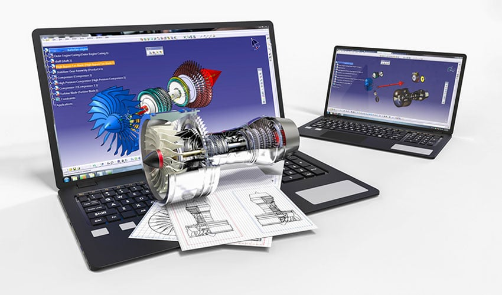
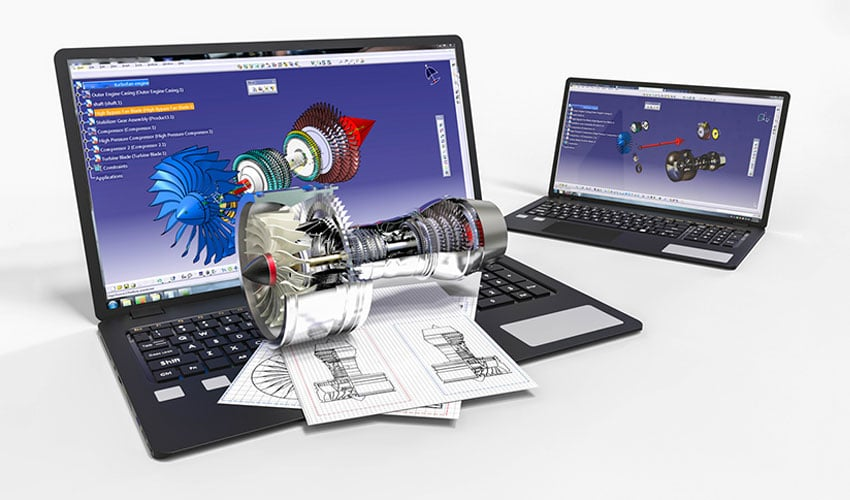

A CAD-et gyártmányok tervezésére és fejlesztésére használják, ezek olyan termékek lehetnek, melyek vagy közvetlenül végfelhasználókhoz kerülnek, vagy közbenső termékek, melyeket más gyártmányokhoz használnak fel.
A CAD-et széleskörűen használják alkatrészek gyártására szolgáló gépek és szerszámok tervezésére is.
CAD-et használnak a mérnöki tevékenység teljes területén a koncepcionális tervezéstől a részletszerkesztésen és analízisen keresztül a gyártási módszerek meghatározásáig bezárólag.
A CAD bevezetése és elterjedése az iparban a tervezési folyamat egyszerűsítését, munkaidő megtakarítást, a tervek minőségének jelentős javulását eredményezte.
A hagyományos tervezési munkát egy vezető tervező (mérnök), részlettervező(k) (középfokú végzettségű technikusok) végezték, a megtervezett, ceruzával megrajzolt rajzokat szakmunkás státusú műszaki rajzolók húzták ki tussal, hogy fénymásolható állapotba hozzák.
A CAD bevezetése után a rajzolók munkája feleslegessé vált, ez a szakma teljesen megszűnt, de a technikusok munkáinak nagy részét is közvetlenül a mérnök vette át, anélkül, hogy többlet terhelés merülne fel.